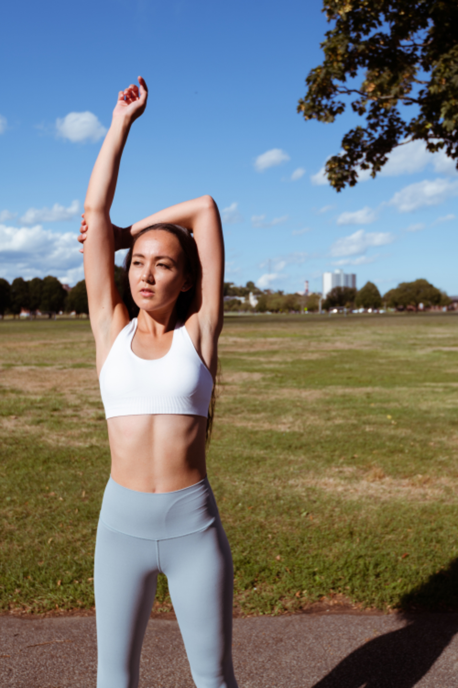

pov: you work from bedand it’s already 3pmdo these every hour
1. take every callstanding up
2. doorway chest stretchforearms on the frame
3. ear to shoulderhold 30 sec each side
4. twist in your chairhold the backrest 5 breaths
5. calf raises whilethe kettle boils

6. reach behind your headand pull your elbow
7. or let an app do itDial Down sorts itsstretches by body partneck, back, hips, legsit’s free, no subscriptionit’s on the app store
save this for tomorrow